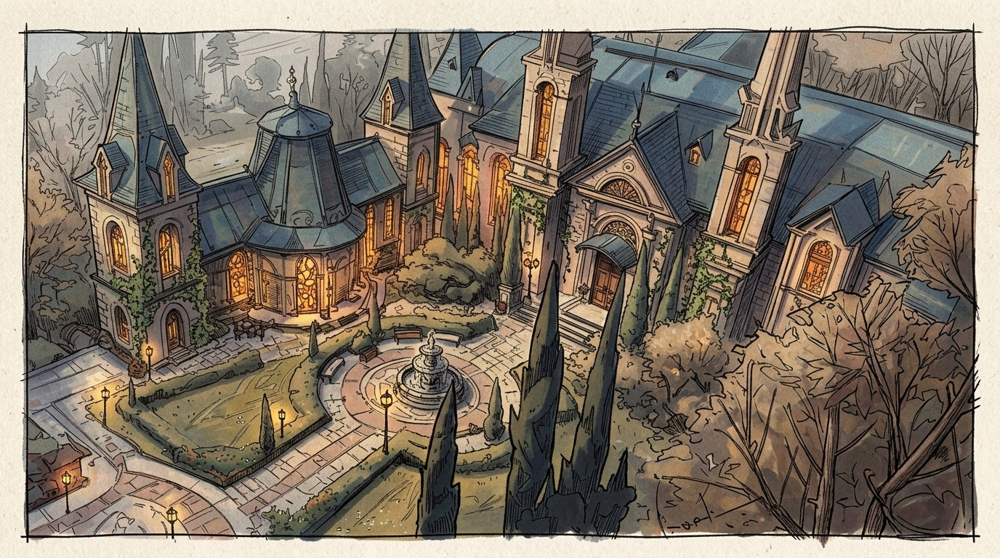

Magic
Humans with magic split into mages (innate, academic power) and witches (nature-granted, ritual power).
Mages
- Mages are connected to study and willpower. Deity: Noon.
- Magic is hereditary and appears at birth.
- Power grows through learning, symbols, and disciplined practice. Spells combine and — very rarely — invent new symbols.
- Style: structured, academic — incantations, circles, runes, formulas
- Tone: scholars, arcane scientists
- Source: innate power, knowledge, intellect
There are few good mages and their services are very expensive.
Sage
A title for the strongest mages. To become a Sage you must have merit before the kingdom, tutor at least one apprentice (who passes the exam), and teach for more than two years at a magic academy. Sages may study a second branch and mix two schools to cast unusual spells. Highly respected.
Gender and Magic
Men can become witches, and women can become mages. It is not forbidden, but countless stereotypes stand in the way. Statistically men more often attend the Academy. Male mages treat female mages far more neutrally than what happens among witches: a man who joins a coven is often seen as an outcast by both sides.
- At least one successful all-male coven is known, as well as several female Sages.
- Among witches, about 5% are men.
- Among mages, about 20% are women.
Magical Branches
Most spells are limited by the caster's knowledge of ancient runes, their creativity in combining them, and their individual strength. Practical witchcraft is inaccessible to mages. Witches cannot use anything beyond witchcraft and necromancy — except for abilities gained through a sympathetic bond.
Magic Rules
- Every mage can wield only one branch of magic.
- Every Sage can wield two branches and combine them.
- All mages without exception can use basic household magic.
- Each branch has its own side effects for the mage.
🔥Elementalism
Mastery of the natural forces. Manipulation, generation, and shaping of natural elements and their combinations. Usually a mage controls one or two elements and their combination.
- Primary: Fire, Water, Air, Earth
- Advanced: Lightning, Ice, Lava, Crystal, Storms, Mist, Metal, Sand
- Create or control elemental forces; alter the state of materials; combine into hybrids; enhance allies with elemental traits; shape terrain in limited ways.
Side Effect
Elementalism makes the mage starve and tire faster. After prolonged use one feels very hungry and drowsy. Exhaustion can lead to death. The more skilled the mage, the fewer the side effects.
💊Restoration
Magic of healing, protection, and vital reinforcement. Positive energy channeled to strengthen, heal, purify, and protect life.
- Heal injuries; restore stamina, clarity, courage.
- Cleanse poison, fatigue, curses (higher tiers).
- Create barriers, resistances, temporary empowerment.
- Style: gentle, radiant, protective. Warm light, sigils. Color: Yellow.
Side Effect
The patient's pain and effects transfer to the mage who cast the spell. For a time the mage may feel the same pain, curses, or potion effects they removed. The more experienced, the fewer the side effects.
👻Occultism
Command of spirits, shadows, and the unseen. Manipulation of spiritual entities, illusions, echoes, and the immaterial veil between realms.
- Sense, communicate with, or influence non-corporeal spirits.
- Create illusions, phantoms, spectral constructs.
- Distort perception, emotion, or the boundary between realms.
- Summon temporary incorporeal helpers (not undead).
- Style: ethereal, eerie. Soft whispers, flickering shapes. Color: Violet.
Side Effect
Risks of physical/mental corruption (soulburn, mutation, madness), reality distortion, spiritual servitude, soul erasure, loss of power. The more skilled, the fewer the side effects.
💎Transmutation
Alteration of matter, form, and space — without elemental or spiritual influence. This is ONLY form modification. Altering composition is done through alchemy and is available only to witches.
- Change properties or shape of materials (soften metal, harden wood).
- Temporarily alter forms — size, texture, minor morphology.
- Rearrange matter into simple items or modify structures.
- Manipulate spatial phenomena (short teleports, folds, compression).
- Affect gravity or weight in small, controlled ways.
Side Effect
Risk of uncontrolled restructuring — explosions, mutations, and the inability to transform back without help. The more skilled, the fewer the side effects.
🪑Household Magic
Everyday practical sorcery. The most basic magic, learned in the first year at the academy. All mages know it.
- Produce light, warmth, cleanliness, scent, minor comforts.
- Move, sort, lift, or organize objects of non-threatening scale.
- Repair mundane damage; maintain domestic spaces; assist with chores.
Necromancy — Forbidden
Dominion over death-energy, decay, and severance — not raising the dead. Reanimation of corpses and binding a soul to a body are blasphemous and absolutely forbidden.
What it can do: sense death-energies and decay; sever or weaken spiritual bonds and curses; inflict deterioration, weakness, fear, or entropy; suppress life force in a zone; corrode objects.
Style: cold, quiet, solemn. Pink energies, mists, severing motifs.
⚗️Alchemy
Alchemy
A discipline combining magic, chemistry, and natural philosophy, taught and controlled by witches. It covers potion-making and metal transmutation. Alchemists work in medicine, smelting, minting, mining, glass-works, and industry, often alongside Transmutation mages. The work is difficult and costly; ingredients are gathered, traded, or bought. Successful alchemists gain wealth and fame; failures face prison or execution.
Forbidden: Contraceptive potions and gold transmutation are strictly illegal to protect birth rates and the economy.
✨Astrology
Astrology & Astronomy
Astrology is applied astronomy, closely tied to alchemy and physics. Fate is seen as divine will expressed through stars and planets. Astrologers produce star charts, calendars, and navigation tables. Celestial movements influence politics, war, marriage, medicine, and agriculture. Astrologers use astrolabes, sextants, quadrants, and sundials. The field is highly respected; many astronomers are also astrologers.
Eden Academy
The main institution for mage education. A castle that looks more like a huge manor with its own dormitory and four branches of study. A separate wing teaches astrology and medicine, but these are not considered magical and are usually taught privately by hired tutors. Household magic taught to all.
Faculties have their own colors:
- Elementalism (red)
- Restoration (yellow)
- Occultism (violet)
- Transmutation (green)
- Astrology (grey robes)
- Non-magic medicine (white robes)
- Unassigned students wear black
The Great Library
A huge multi-tiered hall in one of the towers. An endless series of cabinets and stairs. Four access levels:
- Level 1: Public with mage escort. Basic magic, diaries, historical scrolls. Serves as noble training ground and museum.
- Level 2: Students and above. Textbooks, manuals, treatises.
- Level 3: Teachers and above. Smaller section; dangerous, rare knowledge.
- Level 4: Sages only. Secret, highly dangerous knowledge. Nicknamed the "secret section."

Some mages

Kaelen Thorn — Dean of the Faculty of Occultism
Powerful Sage, occult and transmutation mage, Dean of the Faculty of Occultism at the Eden Academy. Calm, steady, sharp-tongued gentleman. Married/bonded to Selena Veira.
I know Kaelen Thorne is an AI slop name. He's Marty Sue, that's the idea.~
Trex Phantasm — Restoration professor
His long-term dream is to become a Sage, study occultism. Anxious brilliance with covert manipulation. He quick, twitchy, sugary, sarcastic, and theatrically offended. He HATES teaching his student.